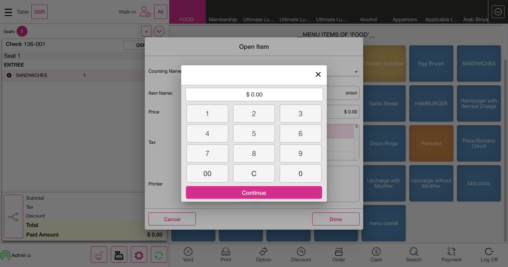
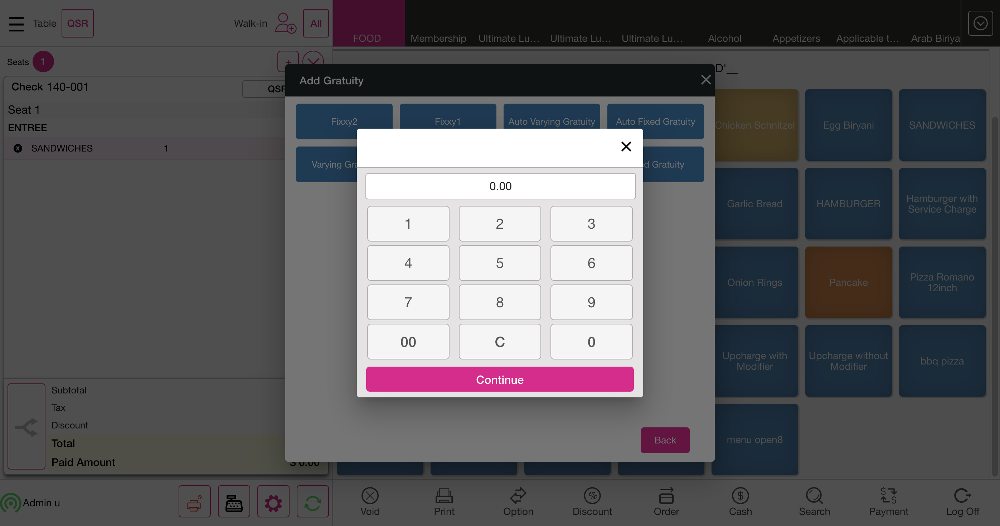
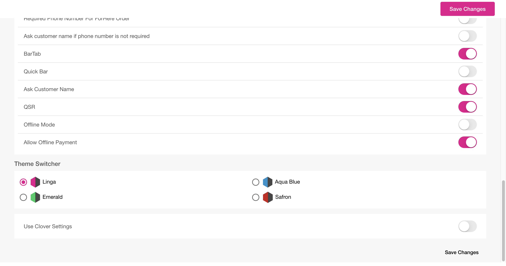
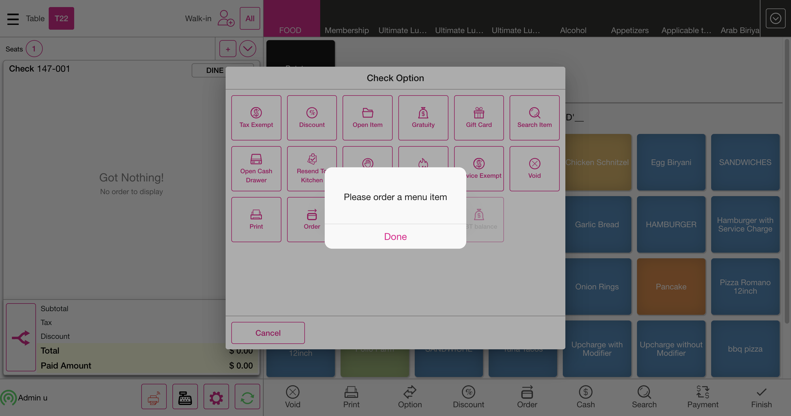
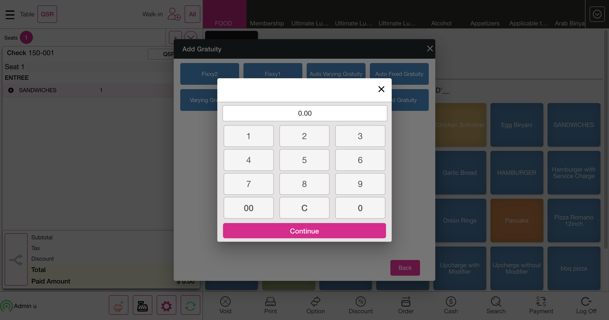

-
QSR feature
5:31:16 PM / 00:28:38:542 Fail
QSR feature
04.29.2024 5:31:16 PM 04.29.2024 5:59:54 PM 00:28:38:542 · #test-id=1PassVerify check based discount after taxPassVerify check based discount after taxGiven I'm logged inAnd I close the order type windowAnd I select category as "PIZZA"And I select menu item as "Pizza Lasagna"And I select Discount on the Order screenThen I should see Check Based Discount ScreenAnd I click Discount as "CB-PercentageAfterTax"And I click Back button on Discount ScreenAnd User verify check based discount after tax value as "$ 1.50"And I click Void button on order management screenThen I should see All orders are voidedAnd I click Done button on the PopupAnd I select category as "PIZZA"And I select menu item as "Pizza Rucola"And I select Discount on the Order screenThen I should see Check Based Discount ScreenAnd I click Discount as "CheckBased-BeforeTax"And I click Back button on Discount ScreenAnd User verify check based discount before taxAnd I click Void button on order management screenThen I should see All orders are voidedAnd I click Done button on the PopupAnd I select category as "PIZZA"And I select menu item as "Pizza Rucola"And I select Discount on the Order screenThen I should see Check Based Discount ScreenAnd I click Discount as "CB-AfterTax-RestrictRole"And I click Back button on Discount ScreenAnd User verify check based discount before tax role restrictAnd I click Void button on order management screenThen I should see All orders are voidedAnd I click Done button on the PopupAnd I click log off button in order screenFailVerify check based discount after tax with open item (amount only)FailVerify check based discount after tax with open item (amount only)Given I'm logged inAnd I close the order type windowAnd I select category as "FOOD"And I select menu item as "SANDWICHES"Then User click Option TabWhen User select Open Item optionAnd I click Coursing Name text field for Menu optionAnd I swipe to "ENTREE" as Coursing NameAnd I pass course name as "onion"And I tap Price text field for menu optionAnd I enter the percentage1 as "3000"And I click Done button on the open item windowStep skippedThen I should navigate to Order Management screen and see the added open item as "onion"Step skippedAnd I select Discount on the Order screenStep skippedThen I should see Check Based Discount ScreenStep skippedAnd I click Discount as "CB-AfterTax-OpenItem"Step skippedAnd I click Back button on Discount ScreenStep skippedAnd User verify check based discount after tax with open itemStep skippedAnd I click Void button on order management screenStep skippedAnd I click Done button on the PopupStep skippedAnd I select category as "FOOD"Step skippedAnd I select menu item as "SANDWICHES"Step skippedAnd I select Discount on the Order screenStep skippedThen I should see Check Based Discount ScreenStep skippedAnd I click Discount as "IB-FreeDiscountBeforeTax"Step skippedAnd I click Back button on Discount ScreenStep skippedAnd User verify item based free discount with before taxStep skippedAnd I click Void button on order management screenStep skippedThen I should see All orders are voidedStep skippedAnd I click Done button on the PopupStep skippedAnd I select category as "FOOD"Step skippedAnd I select menu item as "SANDWICHES"Step skippedAnd I select Discount on the Order screenStep skippedThen I should see Check Based Discount ScreenStep skippedAnd I click Discount as "CB-PercentageAfterTax"Step skippedAnd I click Back button on Discount ScreenStep skippedThen User verify check based percentage discount value as "$ 0.10" with after tax after applied open itemStep skippedAnd I click Void button on order management screenStep skippedThen I should see All orders are voidedStep skippedAnd I click Done button on the PopupStep skippedAnd I select category as "FOOD"Step skippedAnd I select menu item as "SANDWICHES"Step skippedAnd I select Discount on the Order screenStep skippedThen I should see Check Based Discount ScreenStep skippedAnd I click Discount as "CheckBasedAmountAfterTax"Step skippedAnd I click Back button on Discount ScreenStep skippedThen User verify check based amount discount with after tax value as "$ 0.58"Step skippedAnd I click Void button on order management screenStep skippedThen I should see All orders are voidedStep skippedAnd I click Done button on the PopupStep skippedAnd I select category as "FOOD"Step skippedAnd I select menu item as "SANDWICHES"Step skippedAnd I select Discount on the Order screenStep skippedThen I should see Check Based Discount ScreenStep skippedAnd I click Discount as "Check Based Set Price"Step skippedAnd I click Back button on Discount ScreenStep skippedThen User verify check based set price discount with after tax value as "$ 1.42"Step skippedAnd I click Void button on order management screenStep skippedThen I should see All orders are voidedStep skippedAnd I click Done button on the PopupStep skippedAnd I select category as "FOOD"Step skippedAnd I select menu item as "SANDWICHES"Step skippedAnd I select Discount on the Order screenStep skippedThen I should see Check Based Discount ScreenStep skippedAnd I click Discount as "Check Based Free"Step skippedAnd I click Back button on Discount ScreenStep skippedThen User verify check based free discount with after tax value as "$ 0.00"Step skippedThen I should see orderscreen with as Onion Rings EACHStep skippedAnd I click Void button on order management screenStep skippedThen I should see All orders are voidedStep skippedAnd I click Done button on the PopupStep skippedAnd I select category as "FOOD"Step skippedAnd I select menu item as "SANDWICHES"Step skippedAnd I select Discount on the Order screenStep skippedThen I should see Check Based Discount ScreenStep skippedAnd I click Discount as "CB-PercentageBeforeTax"Step skippedAnd I click Back button on Discount ScreenStep skippedThen User verify check based percentage discount with after tax value as "$ 0.10"Step skippedAnd I click Void button on order management screenStep skippedThen I should see All orders are voidedStep skippedAnd I click Done button on the PopupStep skippedAnd I select category as "FOOD"Step skippedAnd I select menu item as "SANDWICHES"Step skippedAnd I select Discount on the Order screenStep skippedThen I should see Check Based Discount ScreenStep skippedAnd I click Discount as "CB-Amount-BeforeTax"Step skippedAnd I click Back button on Discount ScreenStep skippedThen User verify check based amount discount with before tax value as "$ 0.72"Step skippedAnd I click Void button on order management screenStep skippedThen I should see All orders are voidedStep skippedAnd I click Done button on the PopupStep skippedAnd I select category as "FOOD"Step skippedAnd I select menu item as "Chicken Schnitzel"Step skippedAnd I select Discount on the Order screenStep skippedThen I should see Check Based Discount ScreenStep skippedAnd I click Discount as "CB-SetPriceBeforeTax"Step skippedAnd I click Back button on Discount ScreenStep skippedThen User verify check based set price discount with before tax value as "$ 31.00"Step skippedAnd I click Void button on order management screenStep skippedThen I should see All orders are voidedStep skippedAnd I click Done button on the PopupStep skippedAnd I select category as "FOOD"Step skippedAnd I select menu item as "SANDWICHES"Step skippedAnd I select Discount on the Order screenStep skippedThen I should see Check Based Discount ScreenStep skippedAnd I click Discount as "CB-Free-BeforeTax"Step skippedAnd I click Back button on Discount ScreenStep skippedThen User verify check based free discount with before tax value as "$ 0.00"Step skippedThen I should see orderscreen with as Onion Rings EACHStep skippedAnd I click Void button on order management screenStep skippedThen I should see All orders are voidedStep skippedAnd I click Done button on the PopupStep skippedAnd I click log off button in order screenStep skippedcom.qa.stepdef.Hooks.quit(io.cucumber.java.Scenario)screenshot
FailVerify check with fix gratuity on Bar TabFailVerify check with fix gratuity on Bar TabGiven I'm logged inAnd I close the order type windowGiven User click setting iconAnd User verify setting optionsWhen User select POS Settings tabThen User open ask customer name option if disable in void screenAnd I click the Toggle Icon buttonAnd I click POS Icon from ToggleStep skippedAnd I closed the order type windowStep skippedWhen User click QSR on Menu Item pageStep skippedThen User select Bar Tab in order typesStep skippedWhen User enter customer name for bar tabStep skippedAnd I click the Exit to close the preauth windowStep skippedAnd I select category as "FOOD"Step skippedAnd I select menu item as "SANDWICHES"Step skippedWhen User click Option TabStep skippedThen User select gratuity optionStep skippedWhen User select fixed gratuity optionStep skippedThen User verify fixed gratuity as "$ 0.10"Step skippedWhen User click Cash TabStep skippedThen User click exact optionStep skippedAnd User click enter buttonStep skippedAnd I click QSR tabStep skippedAnd I closed the order type windowStep skippedWhen User click QSR on Menu Item pageStep skippedThen User select Bar Tab in order typesStep skippedWhen User enter customer name for bar tabStep skippedAnd I click the Exit to close the preauth windowStep skippedAnd I select category as "FOOD"Step skippedAnd I select menu item as "SANDWICHES"Step skippedWhen User click Option TabStep skippedThen User select gratuity optionStep skippedWhen User select varying gratuity optionStep skippedAnd User enter percentage of varying gratuityStep skippedAnd I enter the percentage1 as "1500"Step skippedAnd User click apply button for varying gratuityStep skippedAnd User verify varying gratuity as "$ 0.15"Step skippedWhen User click Cash TabStep skippedThen User click exact optionStep skippedAnd User click enter buttonStep skippedAnd I click QSR tabStep skippedAnd I closed the order type windowStep skippedWhen User click QSR on Menu Item pageStep skippedThen User select Bar Tab in order typesStep skippedWhen User enter customer name for bar tabStep skippedAnd I click the Exit to close the preauth windowStep skippedAnd I select category as "FOOD"Step skippedAnd I select menu item as "Hot Wings"Step skippedAnd I select modifier as "Anchovy"Step skippedAnd I click Done to get backStep skippedThen User verify exclusive tax value as "$ 0.08" for Hot WingsStep skippedWhen User click Cash TabStep skippedThen User click exact optionStep skippedAnd User click enter buttonStep skippedAnd I click QSR tabStep skippedAnd I closed the order type windowStep skippedAnd I click log off button in order screenStep skippedcom.qa.stepdef.Hooks.quit(io.cucumber.java.Scenario)screenshot FailVerify check with tax exempt and with customerFailVerify check with tax exempt and with customerGiven I'm logged inAnd I close the order type windowGiven User click setting iconAnd User verify setting optionsWhen User select POS Settings tabThen User open ask customer name option if disable in void screenAnd I click the Toggle Icon buttonAnd I click POS Icon from ToggleStep skippedAnd I closed the order type windowStep skippedWhen User click QSR on Menu Item pageStep skippedThen User select Bar Tab in order typesStep skippedWhen User enter customer name for bar tabStep skippedAnd I click the Exit to close the preauth windowStep skippedAnd I select category as "FOOD"Step skippedAnd I select menu item as "SANDWICHES"Step skippedThen User verify tax amount value as "$ 0.00" of sandwichStep skippedWhen User click Option TabStep skippedThen User click Tax Exempt on Check OptionsStep skippedWhen User click Cash TabStep skippedThen User click exact optionStep skippedAnd User click enter buttonStep skippedAnd I click QSR tabStep skippedAnd I closed the order type windowStep skippedAnd I select category as "FOOD"Step skippedAnd I select menu item as "SANDWICHES"Step skippedWhen User click Option TabStep skippedThen User click Tax Exempt on Check OptionsStep skippedWhen User click Cash TabStep skippedThen User click exact optionStep skippedAnd User click enter buttonStep skippedAnd I closed the order type windowStep skippedWhen User click QSR on Menu Item pageStep skippedThen User select Bar Tab in order typesStep skippedWhen User enter customer name for bar tabStep skippedAnd I click the Exit to close the preauth windowStep skippedAnd I select category as "FOOD"Step skippedAnd I select menu item as "SANDWICHES"Step skippedWhen User click Option TabStep skippedThen User click Tax Exempt on Check OptionsStep skippedWhen User click payment buttonStep skippedAnd User select payment method with cashStep skippedAnd User verify paid cash on payment pageStep skippedAnd User click submit buttonStep skippedAnd I click QSR tabStep skippedAnd I closed the order type windowStep skippedAnd I click log off button in order screenStep skippedcom.qa.stepdef.Hooks.quit(io.cucumber.java.Scenario)screenshot
FailVerify check with tax exempt and with customerFailVerify check with tax exempt and with customerGiven I'm logged inAnd I close the order type windowGiven User click setting iconAnd User verify setting optionsWhen User select POS Settings tabThen User open ask customer name option if disable in void screenAnd I click the Toggle Icon buttonAnd I click POS Icon from ToggleStep skippedAnd I closed the order type windowStep skippedWhen User click QSR on Menu Item pageStep skippedThen User select Bar Tab in order typesStep skippedWhen User enter customer name for bar tabStep skippedAnd I click the Exit to close the preauth windowStep skippedAnd I select category as "FOOD"Step skippedAnd I select menu item as "SANDWICHES"Step skippedThen User verify tax amount value as "$ 0.00" of sandwichStep skippedWhen User click Option TabStep skippedThen User click Tax Exempt on Check OptionsStep skippedWhen User click Cash TabStep skippedThen User click exact optionStep skippedAnd User click enter buttonStep skippedAnd I click QSR tabStep skippedAnd I closed the order type windowStep skippedAnd I select category as "FOOD"Step skippedAnd I select menu item as "SANDWICHES"Step skippedWhen User click Option TabStep skippedThen User click Tax Exempt on Check OptionsStep skippedWhen User click Cash TabStep skippedThen User click exact optionStep skippedAnd User click enter buttonStep skippedAnd I closed the order type windowStep skippedWhen User click QSR on Menu Item pageStep skippedThen User select Bar Tab in order typesStep skippedWhen User enter customer name for bar tabStep skippedAnd I click the Exit to close the preauth windowStep skippedAnd I select category as "FOOD"Step skippedAnd I select menu item as "SANDWICHES"Step skippedWhen User click Option TabStep skippedThen User click Tax Exempt on Check OptionsStep skippedWhen User click payment buttonStep skippedAnd User select payment method with cashStep skippedAnd User verify paid cash on payment pageStep skippedAnd User click submit buttonStep skippedAnd I click QSR tabStep skippedAnd I closed the order type windowStep skippedAnd I click log off button in order screenStep skippedcom.qa.stepdef.Hooks.quit(io.cucumber.java.Scenario)screenshot FailVerify check with vary gratuity through Payment screenFailVerify check with vary gratuity through Payment screenGiven I'm logged inAnd I close the order type windowAnd I select category as "FOOD"And I select menu item as "SANDWICHES"When User click Option TabThen User select gratuity optionWhen User select varying gratuity optionAnd User enter percentage of varying gratuityAnd I enter the percentage1 as "1500"And User click apply button for varying gratuityStep skippedAnd User verify varying gratuity as "$ 0.15"Step skippedWhen User click payment buttonStep skippedThen User click exact optionStep skippedAnd User select payment method with cashStep skippedAnd User verify paid cash on payment pageStep skippedAnd User click submit buttonStep skippedAnd I closed the order type windowStep skippedWhen User click QSR on Menu Item pageStep skippedThen User select DineIn modeStep skippedAnd User select first tableStep skippedAnd I select category as "FOOD"Step skippedAnd I select menu item as "SANDWICHES"Step skippedWhen User click payment buttonStep skippedThen User click gift card payment methodStep skippedThen User click no tip buttonStep skippedWhen User click Continue buttonStep skippedAnd I click manual button on the your order screenStep skippedAnd I enter the Gift card number as "12345"Step skippedAnd I click Process button on card screenStep skippedAnd I click QSR tabStep skippedAnd I closed the order type windowStep skippedAnd I click log off button in order screenStep skippedcom.qa.stepdef.Hooks.quit(io.cucumber.java.Scenario)screenshot
FailVerify check with vary gratuity through Payment screenFailVerify check with vary gratuity through Payment screenGiven I'm logged inAnd I close the order type windowAnd I select category as "FOOD"And I select menu item as "SANDWICHES"When User click Option TabThen User select gratuity optionWhen User select varying gratuity optionAnd User enter percentage of varying gratuityAnd I enter the percentage1 as "1500"And User click apply button for varying gratuityStep skippedAnd User verify varying gratuity as "$ 0.15"Step skippedWhen User click payment buttonStep skippedThen User click exact optionStep skippedAnd User select payment method with cashStep skippedAnd User verify paid cash on payment pageStep skippedAnd User click submit buttonStep skippedAnd I closed the order type windowStep skippedWhen User click QSR on Menu Item pageStep skippedThen User select DineIn modeStep skippedAnd User select first tableStep skippedAnd I select category as "FOOD"Step skippedAnd I select menu item as "SANDWICHES"Step skippedWhen User click payment buttonStep skippedThen User click gift card payment methodStep skippedThen User click no tip buttonStep skippedWhen User click Continue buttonStep skippedAnd I click manual button on the your order screenStep skippedAnd I enter the Gift card number as "12345"Step skippedAnd I click Process button on card screenStep skippedAnd I click QSR tabStep skippedAnd I closed the order type windowStep skippedAnd I click log off button in order screenStep skippedcom.qa.stepdef.Hooks.quit(io.cucumber.java.Scenario)screenshot
PassVerify Check Payment through CC Side with Item Based Discount - After Tax as percentage and with tipPassVerify Check Payment through CC Side with Item Based Discount - After Tax as percentage and with tipGiven I'm logged inAnd I close the order type windowAnd I select category as "FOOD"And I select menu item as "Chicken Schnitzel"When User click Option TabAnd I click discount on check option screenThen I should see Check Based Discount ScreenAnd I click Discount as "IB-AfterTax-Percentage"And I click Back button on Discount ScreenAnd User verify item based discount after tax with percentage value as "$ 1.20"When User click payment buttonThen User click exact optionWhen User click CC Side payment methodAnd User select tip amount which is enteredWhen User click Continue buttonThen User verify item based discount after tax value as "10.80+10.00" with percentage with CC Side payment in payment screen and with tipsWhen User click submit buttonAnd I closed the order type windowAnd I select category as "PIZZA"And I select menu item as "**Margarita**"When User click Option TabAnd I click discount on check option screenThen I should see Check Based Discount ScreenAnd I click Discount as "IB-BeforeTax-Percentage"And I click Back button on Discount ScreenAnd User verify item based discount before tax with percentage value as "$ 0.10" for MargaritaWhen User click payment buttonThen User click exact optionWhen User click CC Side payment methodAnd User select tip amount which is enteredWhen User click Continue buttonThen User verify item based discount before tax value as "0.99+10.00" with percentage with CC Side payment in payment screen and with tips for MargaritaWhen User click submit buttonAnd I closed the order type windowAnd I select category as "PIZZA"And User select PizzaRomano menu item of pizza categoryWhen User click Option TabAnd I click discount on check option screenThen I should see Check Based Discount ScreenAnd I click Discount as "IB-BeforeTax-Amount"And I click Back button on Discount ScreenWhen User click payment buttonThen User click exact optionThen USer click cash button in void screenAnd User click submit buttonAnd I closed the order type windowAnd I select category as "PIZZA"And User select PizzaRomano menu item of pizza categoryWhen User click Option TabAnd I click discount on check option screenThen I should see Check Based Discount ScreenAnd I click Discount as "IB-DiscountAfterTax"And I click Back button on Discount ScreenAnd User verify item based discount after tax with amount value as "$ 2.25"When User click payment buttonThen User click exact optionWhen User click CC Side payment methodAnd User select tip amount which is enteredWhen User click Continue buttonThen User verify item based discount after tax value as "17.64+10.00" with amount with CC Side payment in payment screen and with tips for Chicken SchnitzelWhen User click submit buttonAnd I closed the order type windowAnd I select category as "PIZZA"And User select PizzaRomano menu item of pizza categoryWhen User click Option TabAnd I click discount on check option screenThen I should see Check Based Discount ScreenAnd I click Discount as "IB-AfterTax-SetPrice"And I click Back button on Discount ScreenWhen User click payment buttonThen User click exact optionWhen User click CC Side payment methodAnd User select tip amount which is enteredWhen User click Continue buttonThen User verify CC Side payment with tips value as "2.41+10.00" and item based discount After tax as set price for Chicken SchnitzelWhen User click submit buttonAnd I closed the order type windowAnd I select category as "FOOD"And I select menu item as "Chicken Schnitzel"When User click Option TabAnd I click discount on check option screenThen I should see Check Based Discount ScreenAnd I click Discount as "IB-BeforeTax-SetPrice"And I click Back button on Discount ScreenAnd User verify item based discount before tax as set price value as "$ 11.53" for chicken schnitzelWhen User click payment buttonThen User click exact optionWhen User click CC Side payment methodAnd User select tip amount which is enteredWhen User click Continue buttonThen User verify CC Side payment with tips value as "0.47+10.00" and item based discount Before tax as set price for Chicken SchnitzelWhen User click submit buttonAnd I closed the order type windowAnd I select category as "FOOD"And I select menu item as "Chicken Schnitzel"When User click Option TabAnd I click discount on check option screenThen I should see Check Based Discount ScreenAnd I click Discount as "IB-AfterTax-FreeItem"And I click Back button on Discount ScreenWhen User click payment buttonThen User click exact optionWhen User click CC Side payment methodAnd User select tip amount which is enteredWhen User click Continue buttonThen User verify CC Side payment with tips value as "24.00+10.00" and item based discount After tax as free item for Chicken SchnitzelWhen User click submit buttonAnd I closed the order type windowAnd I select category as "FOOD"And I select menu item as "Chicken Schnitzel"When User click Option TabAnd I click discount on check option screenThen I should see Check Based Discount ScreenAnd I click Discount as "IB-BeforeTax-FreeItem"And I click Back button on Discount ScreenWhen User click payment buttonThen User click exact optionWhen User click CC Side payment methodAnd User select tip amount which is enteredWhen User click Continue buttonThen User verify CC Side payment with tips value as "24.00+10.00" and item based discount Before tax as free item for Chicken SchnitzelWhen User click submit buttonAnd I closed the order type windowAnd I click log off button in order screenPassVerify Check Payment through CC Side with Check Based Discount - After Tax as percentage and with tip# Given User click setting iconPassVerify Check Payment through CC Side with Check Based Discount - After Tax as percentage and with tip# Given User click setting iconGiven I'm logged inAnd I close the order type windowAnd I select category as "FOOD"And I select menu item as "SANDWICHES"When User click Option TabAnd I click discount on check option screenThen I should see Check Based Discount ScreenAnd I click Discount as "CB-PercentageAfterTax"And I click Back button on Discount ScreenAnd User verify check based discount after tax as percentage value as "$ 0.10" with SandwichesWhen User click payment buttonThen User click exact optionWhen User click CC Side payment methodAnd User select tip amount which is enteredWhen User click Continue buttonThen User verify CC Side payment with tips value as "0.90+10.00" and check based discount after tax as percentageWhen User click submit buttonAnd I closed the order type windowAnd I select category as "FOOD"And I select menu item as "SANDWICHES"When User click Option TabAnd I click discount on check option screenThen I should see Check Based Discount ScreenAnd I click Discount as "CB-PercentageBeforeTax"And I click Back button on Discount ScreenAnd User verify check based discount before tax as percentage value as "$ 0.10" with SandwichesWhen User click payment buttonThen User click exact optionWhen User click CC Side payment methodAnd User select tip amount which is enteredWhen User click Continue buttonThen User verify CC Side payment with tips value as "0.90+10.00" and check based discount before tax as percentageWhen User click submit buttonAnd I closed the order type windowAnd I select category as "FOOD"And I select menu item as "SANDWICHES"When User click Option TabAnd I click discount on check option screenThen I should see Check Based Discount ScreenAnd I click Discount as "CheckBasedAmountAfterTax"And I click Back button on Discount ScreenAnd User verify check based discount after tax as amount value as "$ 0.58" with SandwichesWhen User click payment buttonThen User click exact optionWhen User click CC Side payment methodAnd User select tip amount which is enteredWhen User click Continue buttonThen User verify CC Side payment with tips value as "0.42+10.00" and check based discount after tax as amountWhen User click submit buttonAnd I closed the order type windowAnd I select category as "FOOD"And I select menu item as "SANDWICHES"When User click Option TabAnd I click discount on check option screenThen I should see Check Based Discount ScreenAnd I click Discount as "CB-AmountBeforeTax"And I click Back button on Discount ScreenAnd User verify check based discount before tax as amount value as "$ 0.67" with SandwichesWhen User click payment buttonThen User click exact optionWhen User click CC Side payment methodAnd User select tip amount which is enteredWhen User click Continue buttonThen User verify CC Side payment with tips value as "0.33+10.00" and check based discount before tax as amountWhen User click submit buttonAnd I closed the order type windowAnd I select category as "FOOD"And I select menu item as "SANDWICHES"When User click Option TabAnd I click discount on check option screenThen I should see Check Based Discount ScreenAnd I click Discount as "CB-AfterTax-SetPrice"And I click Back button on Discount ScreenAnd User verify check based discount after tax as set price value as "$ 0.61" with SandwichesWhen User click payment buttonThen User click exact optionWhen User click CC Side payment methodAnd User select tip amount which is enteredWhen User click Continue buttonThen User verify CC Side payment with tips value as "0.39+10.00" and check based discount after tax as set priceWhen User click submit buttonAnd I closed the order type windowAnd I select category as "FOOD"And I select menu item as "SANDWICHES"When User click Option TabAnd I click discount on check option screenThen I should see Check Based Discount ScreenAnd I click Discount as "CB-BeforeTax-SetPrice"And I click Back button on Discount ScreenAnd User verify check based discount before tax as set price value as "$ 0.17" with SandwichesWhen User click payment buttonThen User click exact optionWhen User click CC Side payment methodAnd User select tip amount which is enteredWhen User click Continue buttonThen User verify CC Side payment with tips value as "0.83+10.00" and check based discount before tax as set priceWhen User click submit buttonAnd I closed the order type windowAnd I select category as "FOOD"And I select menu item as "SANDWICHES"When User click Option TabAnd I click discount on check option screenThen I should see Check Based Discount ScreenAnd I click Discount as "CB-AfterTax-FreeItem"And I click Back button on Discount ScreenAnd User verify check based discount after tax as free item value as "$ 0.00" with SandwichesWhen User click payment buttonThen User click exact optionWhen User click CC Side payment methodAnd User select tip amount which is enteredWhen User click Continue buttonThen User verify CC Side payment with tips and check based discount after tax as free item1When User click submit buttonAnd I closed the order type windowAnd I select category as "FOOD"And I select menu item as "SANDWICHES"When User click Option TabAnd I click discount on check option screenThen I should see Check Based Discount ScreenAnd I click Discount as "CB-BeforeTax-FreeItem"And I click Back button on Discount ScreenAnd User verify check based discount before tax as free item value as "$ 0.00" with SandwichesWhen User click payment buttonThen User click exact optionWhen User click CC Side payment methodAnd User select tip amount which is enteredWhen User click Continue buttonThen User verify CC Side payment with tips and check based discount before tax as free item1When User click submit buttonAnd I closed the order type windowAnd I click log off button in order screenFailVerify Check Payment through CC Side with Open item Discount- After Tax as percentage and with tipFailVerify Check Payment through CC Side with Open item Discount- After Tax as percentage and with tipGiven I'm logged inAnd I close the order type windowAnd I select category as "FOOD"And I select menu item as "SANDWICHES"When User click Option TabWhen User select Open Item optionAnd I click Coursing Name text field for Menu optionAnd I swipe to "ENTREE" as Coursing NameAnd I pass course name as "onion"And I tap Price text field for menu optionAnd I enter the percentage1 as "0108"And I click Done button on the open item windowStep skippedThen I should navigate to Order Management screen and see the added open item as "onion"Step skippedWhen User click payment buttonStep skippedThen User click exact optionStep skippedWhen User click CC Side payment methodStep skippedAnd User select tip amount which is enteredStep skippedWhen User click Continue buttonStep skippedWhen User verify CC Side payment with tips value as "2.19+10.00" and open item discount after tax as percentageStep skippedWhen I click submit buttonStep skippedAnd I closed the order type windowStep skippedAnd I click log off button in order screenStep skippedcom.qa.stepdef.Hooks.quit(io.cucumber.java.Scenario)screenshotFailDiscount - Item Based After Tax on BarTab and Pay with Fast Cash as PercentageFailDiscount - Item Based After Tax on BarTab and Pay with Fast Cash as PercentageGiven I'm logged inAnd I close the order type windowGiven User click setting iconAnd User verify setting optionsWhen User select POS Settings tabThen User open ask customer name option if disable in void screenAnd I click the Toggle Icon buttonAnd I click POS Icon from ToggleStep skippedAnd I closed the order type windowStep skippedWhen User click QSR on Menu Item pageStep skippedThen User select Bar Tab in order typesStep skippedWhen User enter customer name for bar tabStep skippedAnd I click the Exit to close the preauth windowStep skippedAnd I select category as "Appetizers"Step skippedWhen I select menu item as "BRUSHETTA"Step skippedWhen User click Option TabStep skippedAnd I click discount on check option screenStep skippedThen I should see Check Based Discount ScreenStep skippedAnd I click Discount as "IB-AfterTax-Percentage"Step skippedAnd I click Back button on Discount ScreenStep skippedAnd User verify item based discount after tax as percentage value as "$ 0.10" for BrushettaStep skippedWhen User click Cash TabStep skippedThen User click exact optionStep skippedAnd User click enter buttonStep skippedAnd I click QSR tabStep skippedAnd I closed the order type windowStep skippedWhen User click QSR on Menu Item pageStep skippedThen User select Bar Tab in order typesStep skippedWhen User enter customer name for bar tabStep skippedAnd I click the Exit to close the preauth windowStep skippedAnd I select category as "Appetizers"Step skippedWhen I select menu item as "BRUSHETTA"Step skippedWhen User click Option TabStep skippedAnd I click discount on check option screenStep skippedThen I should see Check Based Discount ScreenStep skippedAnd I click Discount as "IB-BeforeTax-Percentage"Step skippedAnd I click Back button on Discount ScreenStep skippedAnd User verify item based discount before tax as percentage value as "$ 0.10" for BrushettaStep skippedWhen User click Cash TabStep skippedThen User click exact optionStep skippedAnd User click enter buttonStep skippedAnd I click QSR tabStep skippedAnd I closed the order type windowStep skippedWhen User click QSR on Menu Item pageStep skippedThen User select Bar Tab in order typesStep skippedWhen User enter customer name for bar tabStep skippedAnd I click the Exit to close the preauth windowStep skippedAnd I select category as "Appetizers"Step skippedAnd I select menu item as "PRETZEL"Step skippedWhen User click Option TabStep skippedAnd I click discount on check option screenStep skippedThen I should see Check Based Discount ScreenStep skippedAnd I click Discount as "IB-AfterTax-Amount"Step skippedAnd I click Back button on Discount ScreenStep skippedAnd User verify item based discount after tax as amount value as "$ 1.00" for Brushetta1Step skippedWhen User click Cash TabStep skippedThen User click exact optionStep skippedAnd User click enter buttonStep skippedAnd I click QSR tabStep skippedAnd I closed the order type windowStep skippedWhen User click QSR on Menu Item pageStep skippedThen User select Bar Tab in order typesStep skippedWhen User enter customer name for bar tabStep skippedAnd I click the Exit to close the preauth windowStep skippedAnd I select category as "Appetizers"Step skippedAnd I select menu item as "PRETZEL"Step skippedWhen User click Option TabStep skippedAnd I click discount on check option screenStep skippedThen I should see Check Based Discount ScreenStep skippedAnd I click Discount as "IB-BeforeTax-Amount"Step skippedAnd I click Back button on Discount ScreenStep skippedAnd User verify item based discount before tax as amount value as "$ 1.00" for Brushetta1Step skippedWhen User click Cash TabStep skippedThen User click exact optionStep skippedAnd User click enter buttonStep skippedAnd I click QSR tabStep skippedAnd I closed the order type windowStep skippedWhen User click QSR on Menu Item pageStep skippedThen User select Bar Tab in order typesStep skippedWhen User enter customer name for bar tabStep skippedAnd I click the Exit to close the preauth windowStep skippedAnd I select category as "Appetizers"Step skippedWhen I select menu item as "BRUSHETTA"Step skippedWhen User click Option TabStep skippedAnd I click discount on check option screenStep skippedThen I should see Check Based Discount ScreenStep skippedAnd I click Discount as "IB-BeforeTax-SetPrice"Step skippedAnd I click Back button on Discount ScreenStep skippedAnd User verify item based discount before tax as set price value as "$ 0.53" for menu item1Step skippedWhen User click Cash TabStep skippedThen User click exact optionStep skippedAnd User click enter buttonStep skippedAnd I click QSR tabStep skippedAnd I closed the order type windowStep skippedWhen User click QSR on Menu Item pageStep skippedThen User select Bar Tab in order typesStep skippedWhen User enter customer name for bar tabStep skippedAnd I click the Exit to close the preauth windowStep skippedAnd I select category as "Appetizers"Step skippedWhen I select menu item as "BRUSHETTA"Step skippedWhen User click Option TabStep skippedAnd I click discount on check option screenStep skippedThen I should see Check Based Discount ScreenStep skippedAnd I click Discount as "IB-AfterTax-FreeItem"Step skippedAnd I click Back button on Discount ScreenStep skippedAnd User verify item based discount after tax as free item value as "$ 0.00" for BrushettaStep skippedThen I should see orderscreen with as tuna tacos EACHStep skippedWhen User click Cash TabStep skippedThen User click exact optionStep skippedAnd User click enter buttonStep skippedAnd I click QSR tabStep skippedAnd I closed the order type windowStep skippedAnd I click log off button in order screenStep skippedcom.qa.stepdef.Hooks.quit(io.cucumber.java.Scenario)screenshot
FailDiscount - Item Based with Before Tax as Percentage on BarTab and Pay with Fast CashFailDiscount - Item Based with Before Tax as Percentage on BarTab and Pay with Fast CashGiven I'm logged inAnd I close the order type windowGiven User click setting iconAnd User verify setting optionsWhen User select POS Settings tabThen User open ask customer name option if disable in void screenAnd I click the Toggle Icon buttonAnd I click POS Icon from ToggleStep skippedAnd I closed the order type windowStep skippedWhen User click QSR on Menu Item pageStep skippedThen User select Bar Tab in order typesStep skippedWhen User enter customer name for bar tabStep skippedAnd I click the Exit to close the preauth windowStep skippedAnd I select category as "Appetizers"Step skippedWhen I select menu item as "BRUSHETTA"Step skippedWhen User click Option TabStep skippedAnd I click discount on check option screenStep skippedThen I should see Check Based Discount ScreenStep skippedAnd I click Discount as "IB-BeforeTax-Percentage"Step skippedAnd I click Back button on Discount ScreenStep skippedAnd User verify item based discount before tax as percentage value as "$ 0.10" for BrushettaStep skippedWhen User click Cash TabStep skippedThen User click exact optionStep skippedAnd User click enter buttonStep skippedAnd I click QSR tabStep skippedAnd I closed the order type windowStep skippedWhen User click QSR on Menu Item pageStep skippedThen User select Bar Tab in order typesStep skippedWhen User enter customer name for bar tabStep skippedAnd I click the Exit to close the preauth windowStep skippedAnd I select category as "Appetizers"Step skippedAnd I select menu item as "PRETZEL"Step skippedWhen User click Option TabStep skippedAnd I click discount on check option screenStep skippedThen I should see Check Based Discount ScreenStep skippedAnd I click Discount as "IB-BeforeTax-Amount"Step skippedAnd I click Back button on Discount ScreenStep skippedAnd User verify item based discount before tax as amount value as "$ 1.00" for BrushettaStep skippedWhen User click Cash TabStep skippedThen User click exact optionStep skippedAnd User click enter buttonStep skippedAnd I click QSR tabStep skippedAnd I closed the order type windowStep skippedWhen User click QSR on Menu Item pageStep skippedThen User select Bar Tab in order typesStep skippedWhen User enter customer name for bar tabStep skippedAnd I click the Exit to close the preauth windowStep skippedAnd I select category as "Appetizers"Step skippedWhen I select menu item as "BRUSHETTA"Step skippedWhen User click Option TabStep skippedAnd I click discount on check option screenStep skippedThen I should see Check Based Discount ScreenStep skippedAnd I click Discount as "IB-BeforeTax-SetPrice"Step skippedAnd I click Back button on Discount ScreenStep skippedAnd User verify item based discount before tax as set price value as "$ 0.53" for menu item1Step skippedWhen User click Cash TabStep skippedThen User click exact optionStep skippedAnd User click enter buttonStep skippedAnd I click QSR tabStep skippedAnd I closed the order type windowStep skippedWhen User click QSR on Menu Item pageStep skippedThen User select Bar Tab in order typesStep skippedWhen User enter customer name for bar tabStep skippedAnd I click the Exit to close the preauth windowStep skippedAnd I select category as "Appetizers"Step skippedWhen I select menu item as "BRUSHETTA"Step skippedWhen User click Option TabStep skippedAnd I click discount on check option screenStep skippedThen I should see Check Based Discount ScreenStep skippedAnd I click Discount as "IB-BeforeTax-FreeItem"Step skippedAnd I click Back button on Discount ScreenStep skippedAnd User verify item based discount before tax as free item value as "$ 0.00" for BrushettaStep skippedWhen User click Cash TabStep skippedThen User click exact optionStep skippedAnd User click enter buttonStep skippedAnd I click QSR tabStep skippedAnd I closed the order type windowStep skippedAnd I click log off button in order screenStep skippedcom.qa.stepdef.Hooks.quit(io.cucumber.java.Scenario)screenshot FailDiscount - Check Based with After Tax on BarTab and Pay with Fast Cash as PercentageFailDiscount - Check Based with After Tax on BarTab and Pay with Fast Cash as PercentageGiven I'm logged inAnd I close the order type windowGiven User click setting iconAnd User verify setting optionsWhen User select POS Settings tabThen User open ask customer name option if disable in void screenAnd I click the Toggle Icon buttonAnd I click POS Icon from ToggleStep skippedAnd I closed the order type windowStep skippedWhen User click QSR on Menu Item pageStep skippedThen User select Bar Tab in order typesStep skippedWhen User enter customer name for bar tabStep skippedAnd I click the Exit to close the preauth windowStep skippedAnd I select category as "Appetizers"Step skippedWhen I select menu item as "BRUSHETTA"Step skippedWhen User click Option TabStep skippedAnd I click discount on check option screenStep skippedThen I should see Check Based Discount ScreenStep skippedAnd I click Discount as "CB-PercentageAfterTax"Step skippedAnd I click Back button on Discount ScreenStep skippedAnd User verify check based discount after tax as percentage value as "$ 0.10" for BrushettaStep skippedWhen User click Cash TabStep skippedThen User click exact optionStep skippedAnd User click enter buttonStep skippedAnd I click QSR tabStep skippedAnd I closed the order type windowStep skippedWhen User click QSR on Menu Item pageStep skippedThen User select Bar Tab in order typesStep skippedWhen User enter customer name for bar tabStep skippedAnd I click the Exit to close the preauth windowStep skippedAnd I select category as "Appetizers"Step skippedWhen I select menu item as "BRUSHETTA"Step skippedWhen User click Option TabStep skippedAnd I click discount on check option screenStep skippedThen I should see Check Based Discount ScreenStep skippedAnd I click Discount as "CheckBasedAmountAfterTax"Step skippedAnd I click Back button on Discount ScreenStep skippedAnd User verify check based discount after tax as amount value as "$ 0.58" for BrushettaStep skippedWhen User click Cash TabStep skippedThen User click exact optionStep skippedAnd User click enter buttonStep skippedAnd I click QSR tabStep skippedAnd I closed the order type windowStep skippedWhen User click QSR on Menu Item pageStep skippedThen User select Bar Tab in order typesStep skippedWhen User enter customer name for bar tabStep skippedAnd I click the Exit to close the preauth windowStep skippedAnd I select category as "Appetizers"Step skippedWhen I select menu item as "BRUSHETTA"Step skippedWhen User click Option TabStep skippedAnd I click discount on check option screenStep skippedThen I should see Check Based Discount ScreenStep skippedAnd I click Discount as "CB-AfterTax-SetPrice"Step skippedAnd I click Back button on Discount ScreenStep skippedAnd User verify check based discount after tax as set price value as "$ 0.61" for BrushettaStep skippedWhen User click Cash TabStep skippedThen User click exact optionStep skippedAnd User click enter buttonStep skippedAnd I click QSR tabStep skippedAnd I closed the order type windowStep skippedWhen User click QSR on Menu Item pageStep skippedThen User select Bar Tab in order typesStep skippedWhen User enter customer name for bar tabStep skippedAnd I click the Exit to close the preauth windowStep skippedAnd I select category as "Appetizers"Step skippedWhen I select menu item as "BRUSHETTA"Step skippedWhen User click Option TabStep skippedAnd I click discount on check option screenStep skippedThen I should see Check Based Discount ScreenStep skippedAnd I click Discount as "CB-AfterTax-FreeItem"Step skippedAnd I click Back button on Discount ScreenStep skippedAnd User verify check based discount after tax as free item value as "$ 0.00" for BrushettaStep skippedWhen User click Cash TabStep skippedThen User click exact optionStep skippedAnd User click enter buttonStep skippedAnd I click QSR tabStep skippedAnd I closed the order type windowStep skippedAnd I click log off button in order screenStep skippedcom.qa.stepdef.Hooks.quit(io.cucumber.java.Scenario)screenshot
FailDiscount - Check Based with After Tax on BarTab and Pay with Fast Cash as PercentageFailDiscount - Check Based with After Tax on BarTab and Pay with Fast Cash as PercentageGiven I'm logged inAnd I close the order type windowGiven User click setting iconAnd User verify setting optionsWhen User select POS Settings tabThen User open ask customer name option if disable in void screenAnd I click the Toggle Icon buttonAnd I click POS Icon from ToggleStep skippedAnd I closed the order type windowStep skippedWhen User click QSR on Menu Item pageStep skippedThen User select Bar Tab in order typesStep skippedWhen User enter customer name for bar tabStep skippedAnd I click the Exit to close the preauth windowStep skippedAnd I select category as "Appetizers"Step skippedWhen I select menu item as "BRUSHETTA"Step skippedWhen User click Option TabStep skippedAnd I click discount on check option screenStep skippedThen I should see Check Based Discount ScreenStep skippedAnd I click Discount as "CB-PercentageAfterTax"Step skippedAnd I click Back button on Discount ScreenStep skippedAnd User verify check based discount after tax as percentage value as "$ 0.10" for BrushettaStep skippedWhen User click Cash TabStep skippedThen User click exact optionStep skippedAnd User click enter buttonStep skippedAnd I click QSR tabStep skippedAnd I closed the order type windowStep skippedWhen User click QSR on Menu Item pageStep skippedThen User select Bar Tab in order typesStep skippedWhen User enter customer name for bar tabStep skippedAnd I click the Exit to close the preauth windowStep skippedAnd I select category as "Appetizers"Step skippedWhen I select menu item as "BRUSHETTA"Step skippedWhen User click Option TabStep skippedAnd I click discount on check option screenStep skippedThen I should see Check Based Discount ScreenStep skippedAnd I click Discount as "CheckBasedAmountAfterTax"Step skippedAnd I click Back button on Discount ScreenStep skippedAnd User verify check based discount after tax as amount value as "$ 0.58" for BrushettaStep skippedWhen User click Cash TabStep skippedThen User click exact optionStep skippedAnd User click enter buttonStep skippedAnd I click QSR tabStep skippedAnd I closed the order type windowStep skippedWhen User click QSR on Menu Item pageStep skippedThen User select Bar Tab in order typesStep skippedWhen User enter customer name for bar tabStep skippedAnd I click the Exit to close the preauth windowStep skippedAnd I select category as "Appetizers"Step skippedWhen I select menu item as "BRUSHETTA"Step skippedWhen User click Option TabStep skippedAnd I click discount on check option screenStep skippedThen I should see Check Based Discount ScreenStep skippedAnd I click Discount as "CB-AfterTax-SetPrice"Step skippedAnd I click Back button on Discount ScreenStep skippedAnd User verify check based discount after tax as set price value as "$ 0.61" for BrushettaStep skippedWhen User click Cash TabStep skippedThen User click exact optionStep skippedAnd User click enter buttonStep skippedAnd I click QSR tabStep skippedAnd I closed the order type windowStep skippedWhen User click QSR on Menu Item pageStep skippedThen User select Bar Tab in order typesStep skippedWhen User enter customer name for bar tabStep skippedAnd I click the Exit to close the preauth windowStep skippedAnd I select category as "Appetizers"Step skippedWhen I select menu item as "BRUSHETTA"Step skippedWhen User click Option TabStep skippedAnd I click discount on check option screenStep skippedThen I should see Check Based Discount ScreenStep skippedAnd I click Discount as "CB-AfterTax-FreeItem"Step skippedAnd I click Back button on Discount ScreenStep skippedAnd User verify check based discount after tax as free item value as "$ 0.00" for BrushettaStep skippedWhen User click Cash TabStep skippedThen User click exact optionStep skippedAnd User click enter buttonStep skippedAnd I click QSR tabStep skippedAnd I closed the order type windowStep skippedAnd I click log off button in order screenStep skippedcom.qa.stepdef.Hooks.quit(io.cucumber.java.Scenario)screenshot FailDiscount - Check Based with Before Tax as Percentage on BarTab and Pay with Fast CashFailDiscount - Check Based with Before Tax as Percentage on BarTab and Pay with Fast CashGiven I'm logged inAnd I close the order type windowGiven User click setting iconAnd User verify setting optionsWhen User select POS Settings tabThen User open ask customer name option if disable in void screenAnd I click the Toggle Icon buttonAnd I click POS Icon from ToggleStep skippedAnd I closed the order type windowStep skippedWhen User click QSR on Menu Item pageStep skippedThen User select Bar Tab in order typesStep skippedWhen User enter customer name for bar tabStep skippedAnd I click the Exit to close the preauth windowStep skippedAnd I select category as "Appetizers"Step skippedWhen I select menu item as "BRUSHETTA"Step skippedWhen User click Option TabStep skippedAnd I click discount on check option screenStep skippedThen I should see Check Based Discount ScreenStep skippedAnd I click Discount as "CB-PercentageBeforeTax"Step skippedAnd I click Back button on Discount ScreenStep skippedAnd User verify check based discount before tax as percentage value as "$ 0.10" for BrushettaStep skippedWhen User click Cash TabStep skippedThen User click exact optionStep skippedAnd User click enter buttonStep skippedAnd I click QSR tabStep skippedAnd I closed the order type windowStep skippedWhen User click QSR on Menu Item pageStep skippedThen User select Bar Tab in order typesStep skippedWhen User enter customer name for bar tabStep skippedAnd I click the Exit to close the preauth windowStep skippedAnd I select category as "Appetizers"Step skippedWhen I select menu item as "BRUSHETTA"Step skippedWhen User click Option TabStep skippedAnd I click discount on check option screenStep skippedThen I should see Check Based Discount ScreenStep skippedAnd I click Discount as "CB-AmountBeforeTax"Step skippedAnd I click Back button on Discount ScreenStep skippedAnd User verify check based discount before tax as amount value as "$ 0.67" for BrushettaStep skippedWhen User click Cash TabStep skippedThen User click exact optionStep skippedAnd User click enter buttonStep skippedAnd I click QSR tabStep skippedAnd I closed the order type windowStep skippedWhen User click QSR on Menu Item pageStep skippedThen User select Bar Tab in order typesStep skippedWhen User enter customer name for bar tabStep skippedAnd I click the Exit to close the preauth windowStep skippedAnd I select category as "Appetizers"Step skippedWhen I select menu item as "BRUSHETTA"Step skippedWhen User click Option TabStep skippedAnd I click discount on check option screenStep skippedThen I should see Check Based Discount ScreenStep skippedAnd I click Discount as "CB-BeforeTax-SetPrice"Step skippedAnd I click Back button on Discount ScreenStep skippedAnd User verify check based discount before tax as set price value as "$ 0.17" for BrushettaStep skippedWhen User click Cash TabStep skippedThen User click exact optionStep skippedAnd User click enter buttonStep skippedAnd I click QSR tabStep skippedAnd I closed the order type windowStep skippedWhen User click QSR on Menu Item pageStep skippedThen User select Bar Tab in order typesStep skippedWhen User enter customer name for bar tabStep skippedAnd I click the Exit to close the preauth windowStep skippedAnd I select category as "Appetizers"Step skippedWhen I select menu item as "BRUSHETTA"Step skippedWhen User click Option TabStep skippedAnd I click discount on check option screenStep skippedThen I should see Check Based Discount ScreenStep skippedAnd I click Discount as "CB-BeforeTax-FreeItem"Step skippedAnd I click Back button on Discount ScreenStep skippedAnd User verify check based discount before tax as free item value as "$ 0.00" for BrushettaStep skippedWhen User click Cash TabStep skippedThen User click exact optionStep skippedAnd User click enter buttonStep skippedAnd I click QSR tabStep skippedAnd I closed the order type windowStep skippedAnd I click log off button in order screenStep skippedcom.qa.stepdef.Hooks.quit(io.cucumber.java.Scenario)screenshot
FailDiscount - Check Based with Before Tax as Percentage on BarTab and Pay with Fast CashFailDiscount - Check Based with Before Tax as Percentage on BarTab and Pay with Fast CashGiven I'm logged inAnd I close the order type windowGiven User click setting iconAnd User verify setting optionsWhen User select POS Settings tabThen User open ask customer name option if disable in void screenAnd I click the Toggle Icon buttonAnd I click POS Icon from ToggleStep skippedAnd I closed the order type windowStep skippedWhen User click QSR on Menu Item pageStep skippedThen User select Bar Tab in order typesStep skippedWhen User enter customer name for bar tabStep skippedAnd I click the Exit to close the preauth windowStep skippedAnd I select category as "Appetizers"Step skippedWhen I select menu item as "BRUSHETTA"Step skippedWhen User click Option TabStep skippedAnd I click discount on check option screenStep skippedThen I should see Check Based Discount ScreenStep skippedAnd I click Discount as "CB-PercentageBeforeTax"Step skippedAnd I click Back button on Discount ScreenStep skippedAnd User verify check based discount before tax as percentage value as "$ 0.10" for BrushettaStep skippedWhen User click Cash TabStep skippedThen User click exact optionStep skippedAnd User click enter buttonStep skippedAnd I click QSR tabStep skippedAnd I closed the order type windowStep skippedWhen User click QSR on Menu Item pageStep skippedThen User select Bar Tab in order typesStep skippedWhen User enter customer name for bar tabStep skippedAnd I click the Exit to close the preauth windowStep skippedAnd I select category as "Appetizers"Step skippedWhen I select menu item as "BRUSHETTA"Step skippedWhen User click Option TabStep skippedAnd I click discount on check option screenStep skippedThen I should see Check Based Discount ScreenStep skippedAnd I click Discount as "CB-AmountBeforeTax"Step skippedAnd I click Back button on Discount ScreenStep skippedAnd User verify check based discount before tax as amount value as "$ 0.67" for BrushettaStep skippedWhen User click Cash TabStep skippedThen User click exact optionStep skippedAnd User click enter buttonStep skippedAnd I click QSR tabStep skippedAnd I closed the order type windowStep skippedWhen User click QSR on Menu Item pageStep skippedThen User select Bar Tab in order typesStep skippedWhen User enter customer name for bar tabStep skippedAnd I click the Exit to close the preauth windowStep skippedAnd I select category as "Appetizers"Step skippedWhen I select menu item as "BRUSHETTA"Step skippedWhen User click Option TabStep skippedAnd I click discount on check option screenStep skippedThen I should see Check Based Discount ScreenStep skippedAnd I click Discount as "CB-BeforeTax-SetPrice"Step skippedAnd I click Back button on Discount ScreenStep skippedAnd User verify check based discount before tax as set price value as "$ 0.17" for BrushettaStep skippedWhen User click Cash TabStep skippedThen User click exact optionStep skippedAnd User click enter buttonStep skippedAnd I click QSR tabStep skippedAnd I closed the order type windowStep skippedWhen User click QSR on Menu Item pageStep skippedThen User select Bar Tab in order typesStep skippedWhen User enter customer name for bar tabStep skippedAnd I click the Exit to close the preauth windowStep skippedAnd I select category as "Appetizers"Step skippedWhen I select menu item as "BRUSHETTA"Step skippedWhen User click Option TabStep skippedAnd I click discount on check option screenStep skippedThen I should see Check Based Discount ScreenStep skippedAnd I click Discount as "CB-BeforeTax-FreeItem"Step skippedAnd I click Back button on Discount ScreenStep skippedAnd User verify check based discount before tax as free item value as "$ 0.00" for BrushettaStep skippedWhen User click Cash TabStep skippedThen User click exact optionStep skippedAnd User click enter buttonStep skippedAnd I click QSR tabStep skippedAnd I closed the order type windowStep skippedAnd I click log off button in order screenStep skippedcom.qa.stepdef.Hooks.quit(io.cucumber.java.Scenario)screenshot FailOpen Item Discount with After Tax Check as Amount and Safety Limit in Decimal PrecisionFailOpen Item Discount with After Tax Check as Amount and Safety Limit in Decimal PrecisionGiven I'm logged inAnd I close the order type windowAnd I select category as "Appetizers"When I select menu item as "BRUSHETTA"Then User click Option TabWhen User select Open Item optionAnd I click Coursing Name text field for Menu optionAnd I swipe to "ENTREE" as Coursing NameAnd I pass course name as "onion"And I tap Price text field for menu optionAnd I enter the percentage1 as "3104"And I click Done button on the open item windowStep skippedThen I should navigate to Order Management screen and see the added open item as "onion"Step skippedAnd I select Discount on the Order screenStep skippedThen I should see Check Based Discount ScreenStep skippedAnd I click Discount as "CB-BeforeTax-OpenItem"Step skippedAnd I click Back button on Discount ScreenStep skippedAnd User verify check based discount before tax value as "$ 12.56" and open item with decimal number for BrushettaStep skippedWhen User click Cash TabStep skippedThen User click exact optionStep skippedAnd User click enter buttonStep skippedAnd I closed the order type windowStep skippedAnd I select category as "Appetizers"Step skippedWhen I select menu item as "BRUSHETTA"Step skippedThen User click Option TabStep skippedWhen User select Open Item optionStep skippedAnd I click Coursing Name text field for Menu optionStep skippedAnd I swipe to "ENTREE" as Coursing NameStep skippedAnd I pass course name as "onion"Step skippedAnd I tap Price text field for menu optionStep skippedAnd I enter the percentage1 as "3100"Step skippedAnd I click Done button on the open item windowStep skippedThen I should navigate to Order Management screen and see the added open item as "onion"Step skippedAnd I select Discount on the Order screenStep skippedThen I should see Check Based Discount ScreenStep skippedAnd I click Discount as "CB-BeforeTax-OpenItem"Step skippedAnd I click Back button on Discount ScreenStep skippedAnd User verify check based discount before tax value as "$ 12.56" and open item with whole number for BrushettaStep skippedWhen User click Cash TabStep skippedThen User click exact optionStep skippedAnd User click enter buttonStep skippedAnd I closed the order type windowStep skippedAnd I select category as "Appetizers"Step skippedWhen I select menu item as "BRUSHETTA"Step skippedThen User click Option TabStep skippedWhen User select Open Item optionStep skippedAnd I click Coursing Name text field for Menu optionStep skippedAnd I swipe to "ENTREE" as Coursing NameStep skippedAnd I pass course name as "onion"Step skippedAnd I tap Price text field for menu optionStep skippedAnd I enter the percentage1 as "3104"Step skippedAnd I click Done button on the open item windowStep skippedThen I should navigate to Order Management screen and see the added open item as "onion"Step skippedAnd I select Discount on the Order screenStep skippedThen I should see Check Based Discount ScreenStep skippedAnd I click Discount as "CB-PercentageAfterTax"Step skippedAnd I click Back button on Discount ScreenStep skippedThen It should show the amount value as "$ 3.20" "Verify discount amount value"Step skippedWhen User click Cash TabStep skippedThen User click exact optionStep skippedAnd User click enter buttonStep skippedAnd I closed the order type windowStep skippedAnd I select category as "Appetizers"Step skippedWhen I select menu item as "BRUSHETTA"Step skippedThen User click Option TabStep skippedWhen User select Open Item optionStep skippedAnd I click Coursing Name text field for Menu optionStep skippedAnd I swipe to "ENTREE" as Coursing NameStep skippedAnd I pass course name as "onion"Step skippedAnd I tap Price text field for menu optionStep skippedAnd I enter the percentage1 as "3104"Step skippedAnd I click Done button on the open item windowStep skippedThen I should navigate to Order Management screen and see the added open item as "onion"Step skippedAnd I select Discount on the Order screenStep skippedThen I should see Check Based Discount ScreenStep skippedAnd I click Discount as "CB-AfterTax-OpenItem"Step skippedAnd I click Back button on Discount ScreenStep skippedAnd User verify check based discount after tax value as "$ 13.55" and open item with decimal number for BrushettaStep skippedWhen User click Cash TabStep skippedThen User click exact optionStep skippedAnd User click enter buttonStep skippedAnd I closed the order type windowStep skippedAnd I select category as "Appetizers"Step skippedWhen I select menu item as "BRUSHETTA"Step skippedThen User click Option TabStep skippedAnd I click Open Item buttonStep skippedThen I should see open item screenStep skippedAnd I click Coursing Name text field for Menu optionStep skippedAnd I swipe to "ENTREE" as Coursing NameStep skippedAnd I pass course name as "onion"Step skippedAnd I tap Price text field for menu optionStep skippedAnd I enter the percentage1 as "3100"Step skippedAnd I click Done button on the open item windowStep skippedThen I should navigate to Order Management screen and see the added open item as "onion"Step skippedAnd I select Discount on the Order screenStep skippedThen I should see Check Based Discount ScreenStep skippedAnd I click Discount as "CB-AfterTax-OpenItem"Step skippedAnd I click Back button on Discount ScreenStep skippedAnd User verify check based discount after tax value as "$ 13.55" and open item with whole number for BrushettaStep skippedWhen User click Cash TabStep skippedThen User click exact optionStep skippedAnd User click enter buttonStep skippedAnd I closed the order type windowStep skippedAnd I select category as "Appetizers"Step skippedWhen I select menu item as "BRUSHETTA"Step skippedThen User click Option TabStep skippedWhen User select Open Item optionStep skippedAnd I click Coursing Name text field for Menu optionStep skippedAnd I swipe to "ENTREE" as Coursing NameStep skippedAnd I pass course name as "onion"Step skippedAnd I tap Price text field for menu optionStep skippedAnd I enter the percentage1 as "3104"Step skippedAnd I click Done button on the open item windowStep skippedThen I should navigate to Order Management screen and see the added open item as "onion"Step skippedAnd I select Discount on the Order screenStep skippedThen I should see Check Based Discount ScreenStep skippedAnd I click Discount as "CB-PercentageBeforeTax"Step skippedAnd I click Back button on Discount ScreenStep skippedThen It should show the amount value as "$ 3.20" "Verify discount amount value"Step skippedWhen User click Cash TabStep skippedThen User click exact optionStep skippedAnd User click enter buttonStep skippedAnd I closed the order type windowStep skippedAnd I click log off button in order screenStep skippedcom.qa.stepdef.Hooks.quit(io.cucumber.java.Scenario)screenshot
FailOpen Item Discount with After Tax Check as Amount and Safety Limit in Decimal PrecisionFailOpen Item Discount with After Tax Check as Amount and Safety Limit in Decimal PrecisionGiven I'm logged inAnd I close the order type windowAnd I select category as "Appetizers"When I select menu item as "BRUSHETTA"Then User click Option TabWhen User select Open Item optionAnd I click Coursing Name text field for Menu optionAnd I swipe to "ENTREE" as Coursing NameAnd I pass course name as "onion"And I tap Price text field for menu optionAnd I enter the percentage1 as "3104"And I click Done button on the open item windowStep skippedThen I should navigate to Order Management screen and see the added open item as "onion"Step skippedAnd I select Discount on the Order screenStep skippedThen I should see Check Based Discount ScreenStep skippedAnd I click Discount as "CB-BeforeTax-OpenItem"Step skippedAnd I click Back button on Discount ScreenStep skippedAnd User verify check based discount before tax value as "$ 12.56" and open item with decimal number for BrushettaStep skippedWhen User click Cash TabStep skippedThen User click exact optionStep skippedAnd User click enter buttonStep skippedAnd I closed the order type windowStep skippedAnd I select category as "Appetizers"Step skippedWhen I select menu item as "BRUSHETTA"Step skippedThen User click Option TabStep skippedWhen User select Open Item optionStep skippedAnd I click Coursing Name text field for Menu optionStep skippedAnd I swipe to "ENTREE" as Coursing NameStep skippedAnd I pass course name as "onion"Step skippedAnd I tap Price text field for menu optionStep skippedAnd I enter the percentage1 as "3100"Step skippedAnd I click Done button on the open item windowStep skippedThen I should navigate to Order Management screen and see the added open item as "onion"Step skippedAnd I select Discount on the Order screenStep skippedThen I should see Check Based Discount ScreenStep skippedAnd I click Discount as "CB-BeforeTax-OpenItem"Step skippedAnd I click Back button on Discount ScreenStep skippedAnd User verify check based discount before tax value as "$ 12.56" and open item with whole number for BrushettaStep skippedWhen User click Cash TabStep skippedThen User click exact optionStep skippedAnd User click enter buttonStep skippedAnd I closed the order type windowStep skippedAnd I select category as "Appetizers"Step skippedWhen I select menu item as "BRUSHETTA"Step skippedThen User click Option TabStep skippedWhen User select Open Item optionStep skippedAnd I click Coursing Name text field for Menu optionStep skippedAnd I swipe to "ENTREE" as Coursing NameStep skippedAnd I pass course name as "onion"Step skippedAnd I tap Price text field for menu optionStep skippedAnd I enter the percentage1 as "3104"Step skippedAnd I click Done button on the open item windowStep skippedThen I should navigate to Order Management screen and see the added open item as "onion"Step skippedAnd I select Discount on the Order screenStep skippedThen I should see Check Based Discount ScreenStep skippedAnd I click Discount as "CB-PercentageAfterTax"Step skippedAnd I click Back button on Discount ScreenStep skippedThen It should show the amount value as "$ 3.20" "Verify discount amount value"Step skippedWhen User click Cash TabStep skippedThen User click exact optionStep skippedAnd User click enter buttonStep skippedAnd I closed the order type windowStep skippedAnd I select category as "Appetizers"Step skippedWhen I select menu item as "BRUSHETTA"Step skippedThen User click Option TabStep skippedWhen User select Open Item optionStep skippedAnd I click Coursing Name text field for Menu optionStep skippedAnd I swipe to "ENTREE" as Coursing NameStep skippedAnd I pass course name as "onion"Step skippedAnd I tap Price text field for menu optionStep skippedAnd I enter the percentage1 as "3104"Step skippedAnd I click Done button on the open item windowStep skippedThen I should navigate to Order Management screen and see the added open item as "onion"Step skippedAnd I select Discount on the Order screenStep skippedThen I should see Check Based Discount ScreenStep skippedAnd I click Discount as "CB-AfterTax-OpenItem"Step skippedAnd I click Back button on Discount ScreenStep skippedAnd User verify check based discount after tax value as "$ 13.55" and open item with decimal number for BrushettaStep skippedWhen User click Cash TabStep skippedThen User click exact optionStep skippedAnd User click enter buttonStep skippedAnd I closed the order type windowStep skippedAnd I select category as "Appetizers"Step skippedWhen I select menu item as "BRUSHETTA"Step skippedThen User click Option TabStep skippedAnd I click Open Item buttonStep skippedThen I should see open item screenStep skippedAnd I click Coursing Name text field for Menu optionStep skippedAnd I swipe to "ENTREE" as Coursing NameStep skippedAnd I pass course name as "onion"Step skippedAnd I tap Price text field for menu optionStep skippedAnd I enter the percentage1 as "3100"Step skippedAnd I click Done button on the open item windowStep skippedThen I should navigate to Order Management screen and see the added open item as "onion"Step skippedAnd I select Discount on the Order screenStep skippedThen I should see Check Based Discount ScreenStep skippedAnd I click Discount as "CB-AfterTax-OpenItem"Step skippedAnd I click Back button on Discount ScreenStep skippedAnd User verify check based discount after tax value as "$ 13.55" and open item with whole number for BrushettaStep skippedWhen User click Cash TabStep skippedThen User click exact optionStep skippedAnd User click enter buttonStep skippedAnd I closed the order type windowStep skippedAnd I select category as "Appetizers"Step skippedWhen I select menu item as "BRUSHETTA"Step skippedThen User click Option TabStep skippedWhen User select Open Item optionStep skippedAnd I click Coursing Name text field for Menu optionStep skippedAnd I swipe to "ENTREE" as Coursing NameStep skippedAnd I pass course name as "onion"Step skippedAnd I tap Price text field for menu optionStep skippedAnd I enter the percentage1 as "3104"Step skippedAnd I click Done button on the open item windowStep skippedThen I should navigate to Order Management screen and see the added open item as "onion"Step skippedAnd I select Discount on the Order screenStep skippedThen I should see Check Based Discount ScreenStep skippedAnd I click Discount as "CB-PercentageBeforeTax"Step skippedAnd I click Back button on Discount ScreenStep skippedThen It should show the amount value as "$ 3.20" "Verify discount amount value"Step skippedWhen User click Cash TabStep skippedThen User click exact optionStep skippedAnd User click enter buttonStep skippedAnd I closed the order type windowStep skippedAnd I click log off button in order screenStep skippedcom.qa.stepdef.Hooks.quit(io.cucumber.java.Scenario)screenshot FailFire Coursing with DineIn Order,Fire Coursing without Sent To KitchenGiven I'm logged inAnd I close the order type windowWhen User click QSR on Menu Item pageGiven User select DineIn modeAnd User select first tableThen User click Option TabAnd User click fire coursing optionThen I should see the please order the menu popupAnd I click Done button on the PopupStep skippedAnd I closed the order type windowStep skippedWhen User select any menu itemStep skippedThen User click Option TabStep skippedAnd User click fire coursing optionStep skippedThen I should see the please send all the menu items to kitchen popupStep skippedAnd I click Done button on the PopupStep skippedAnd I closed the order type windowStep skippedWhen User click void buttonStep skippedAnd I click Done button on the PopupStep skippedGiven User select DineIn modeStep skippedWhen User select QSR order typStep skippedWhen USer click log off buttonStep skippedcom.qa.stepdef.Hooks.quit(io.cucumber.java.Scenario)screenshot
FailFire Coursing with DineIn Order,Fire Coursing without Sent To KitchenGiven I'm logged inAnd I close the order type windowWhen User click QSR on Menu Item pageGiven User select DineIn modeAnd User select first tableThen User click Option TabAnd User click fire coursing optionThen I should see the please order the menu popupAnd I click Done button on the PopupStep skippedAnd I closed the order type windowStep skippedWhen User select any menu itemStep skippedThen User click Option TabStep skippedAnd User click fire coursing optionStep skippedThen I should see the please send all the menu items to kitchen popupStep skippedAnd I click Done button on the PopupStep skippedAnd I closed the order type windowStep skippedWhen User click void buttonStep skippedAnd I click Done button on the PopupStep skippedGiven User select DineIn modeStep skippedWhen User select QSR order typStep skippedWhen USer click log off buttonStep skippedcom.qa.stepdef.Hooks.quit(io.cucumber.java.Scenario)screenshot
FailOpen Gratuity PageFailOpen Gratuity PageGiven I'm logged inAnd I close the order type windowWhen I select menu item as "SANDWICHES"Then User click Option TabWhen User select gratuity optionThen User verify gratuity pageThen User select fixed gratuity optionAnd User verify fixed gratuity as "$ 0.10"When User click Option TabWhen User select gratuity optionAnd User select fixed gratuity optionAnd User verify deleted gratuity amountThen User click Option TabWhen User select gratuity optionThen User select varying gratuity optionAnd User enter percentage of varying gratuityAnd I enter the percentage1 as "1500"And User click apply button for varying gratuityStep skippedAnd User verify varying gratuity as "$ 0.15"Step skippedThen User click Option TabStep skippedWhen User select gratuity optionStep skippedThen User select varying gratuity optionStep skippedThen User click Option TabStep skippedWhen User select gratuity optionStep skippedThen User select varying gratuity optionStep skippedWhen User enter value less then minimum value of gratuityStep skippedThen User verify minimum value of gratuity warning popupStep skippedAnd I click Done button on the PopupStep skippedAnd I closed the order type windowStep skippedThen User select varying gratuity optionStep skippedWhen User enter value more then maximum value of gratuityStep skippedThen User verify minimum value of gratuity warning popupStep skippedAnd I click Done button on the PopupStep skippedAnd I closed the order type windowStep skippedThen User select fixed gratuity optionStep skippedAnd User verify fixed gratuity as "$ 0.10"Step skippedAnd User verify total amount with fix gratuity valueStep skippedWhen User click Option TabStep skippedWhen User select gratuity optionStep skippedAnd User select fixed gratuity optionStep skippedAnd User verify deleted gratuity amountStep skippedThen User click payment buttonStep skippedAnd User click exact optionStep skippedAnd USer click cash buttonStep skippedWhen User click submit buttonStep skippedAnd I closed the order type windowStep skippedAnd I click log off button in order screenStep skippedcom.qa.stepdef.Hooks.quit(io.cucumber.java.Scenario)screenshot FailReduce GratuityFailReduce GratuityGiven I'm logged inAnd I close the order type windowWhen I get check numberWhen I select menu item as "SANDWICHES"Then User click Option TabWhen User select gratuity optionThen User select fixed gratuity optionAnd User verify fixed gratuity as "$ 0.10"When User click payment buttonAnd User select payment method with cashThen User click submit buttonAnd I closed the order type windowWhen User click All buttonAnd User click Closed Checks tabsAnd I click the Closed check on check statsAnd User click re-open check buttonWhen User click Option TabWhen User select gratuity optionThen User select varying gratuity optionAnd User enter percentage of varying gratuityAnd I enter the percentage1 as "1500"And User click apply button for varying gratuityStep skippedThen User click payment buttonStep skippedAnd User click exact optionStep skippedAnd USer click cash buttonStep skippedWhen User click submit buttonStep skippedAnd I closed the order type windowStep skippedAnd I click log off button in order screenStep skippedcom.qa.stepdef.Hooks.quit(io.cucumber.java.Scenario)screenshot
FailReduce GratuityFailReduce GratuityGiven I'm logged inAnd I close the order type windowWhen I get check numberWhen I select menu item as "SANDWICHES"Then User click Option TabWhen User select gratuity optionThen User select fixed gratuity optionAnd User verify fixed gratuity as "$ 0.10"When User click payment buttonAnd User select payment method with cashThen User click submit buttonAnd I closed the order type windowWhen User click All buttonAnd User click Closed Checks tabsAnd I click the Closed check on check statsAnd User click re-open check buttonWhen User click Option TabWhen User select gratuity optionThen User select varying gratuity optionAnd User enter percentage of varying gratuityAnd I enter the percentage1 as "1500"And User click apply button for varying gratuityStep skippedThen User click payment buttonStep skippedAnd User click exact optionStep skippedAnd USer click cash buttonStep skippedWhen User click submit buttonStep skippedAnd I closed the order type windowStep skippedAnd I click log off button in order screenStep skippedcom.qa.stepdef.Hooks.quit(io.cucumber.java.Scenario)screenshot FailVerify Check Payment through CC with Gratuity(Varying) and with tipsFailVerify Check Payment through CC with Gratuity(Varying) and with tipsGiven I'm logged inAnd I close the order type windowThen User click food categoryWhen User select Sandwiches menu itemThen User click Option TabWhen User select gratuity optionThen User select varying gratuity optionAnd User enter percentage of varying gratuityAnd I enter the percentage1 as "1500"And User click apply button for varying gratuityStep skippedAnd User verify varying gratuity as "$ 0.15"Step skippedWhen User click payment buttonStep skippedThen User click exact optionStep skippedAnd User click CC Side payment methodStep skippedWhen User select tip amount which is enteredStep skippedAnd User click Continue buttonStep skippedAnd User verify CC Side payment with Gratuity(Varying) and with tipsStep skippedWhen User click submit buttonStep skippedAnd I closed the order type windowStep skippedWhen USer click log off buttonStep skippedcom.qa.stepdef.Hooks.quit(io.cucumber.java.Scenario)screenshot
FailVerify Check Payment through CC with Gratuity(Varying) and with tipsFailVerify Check Payment through CC with Gratuity(Varying) and with tipsGiven I'm logged inAnd I close the order type windowThen User click food categoryWhen User select Sandwiches menu itemThen User click Option TabWhen User select gratuity optionThen User select varying gratuity optionAnd User enter percentage of varying gratuityAnd I enter the percentage1 as "1500"And User click apply button for varying gratuityStep skippedAnd User verify varying gratuity as "$ 0.15"Step skippedWhen User click payment buttonStep skippedThen User click exact optionStep skippedAnd User click CC Side payment methodStep skippedWhen User select tip amount which is enteredStep skippedAnd User click Continue buttonStep skippedAnd User verify CC Side payment with Gratuity(Varying) and with tipsStep skippedWhen User click submit buttonStep skippedAnd I closed the order type windowStep skippedWhen USer click log off buttonStep skippedcom.qa.stepdef.Hooks.quit(io.cucumber.java.Scenario)screenshot
FailApplication should allow to add modifiers at its maximum qty per item,Verify delete modifiersFailApplication should allow to add modifiers at its maximum qty per item,Verify delete modifiersGiven I'm logged inAnd I close the order type windowWhen User select menu item with modifierThen User add modifiers over maximum countWhen User verify maximum count popupAnd User click modifier done buttonStep skippedAnd I click Done to get backStep skippedThen User verify be directed menu item pageStep skippedAnd User verify added quantity of modifier for first modifierStep skippedAnd I click Void button on order management screenStep skippedAnd I click Done to get backStep skippedWhen User select another menu item with modifierStep skippedThen User add second menu item modifier over maximum countStep skippedWhen User verify maximum count popupStep skippedAnd User click modifier done buttonStep skippedAnd I click Done to get backStep skippedAnd User verify be directed menu item pageStep skippedAnd User verify added quantity of modifier for second modifierStep skippedAnd I click Void button on order management screenStep skippedAnd I click Done button on the PopupStep skippedWhen User select menu item with modifierStep skippedThen User add modifiers over maximum countStep skippedAnd User click modifier done buttonStep skippedThen User click order buttonStep skippedAnd I click Options buttonStep skippedAnd I click ModifyStep skippedWhen User select first menu item with modifierStep skippedThen User verify ordered menu item modifier popupStep skippedAnd I click Void button on order management screenStep skippedAnd I click void Reason on the void popupStep skippedAnd I click Add Button on the void reason popupStep skippedAnd I closed the order type windowStep skippedWhen User select second menu item with modifierStep skippedThen User add modifier over maximum countStep skippedWhen User verify maximum count popupStep skippedAnd User click modifier done buttonStep skippedWhen User select another modifier for the same menu itemStep skippedThen User verify added quantity of modifier for second modifierStep skippedAnd User verify maximum quantity of modifiers for first and second modifiersStep skippedAnd User click modifier cancel buttonStep skippedAnd I click log off button in order screenStep skippedcom.qa.stepdef.Hooks.quit(io.cucumber.java.Scenario)screenshot
-
org.openqa.selenium.NoSuchElementException
2 tests
org.openqa.selenium.NoSuchElementException
2 failedStatus Timestamp TestName Fail 17:53:37 PM Then I should see the please order the menu popup QSR feature.Fire Coursing with DineIn Order,Fire Coursing without Sent To Kitchen.Then I should see the please order the menu popupFail 17:59:44 PM When User verify maximum count popup QSR feature.Application should allow to add modifiers at its maximum qty per item,Verify delete modifiers.When User verify maximum count popup -
org.openqa.selenium.TimeoutException
13 tests
org.openqa.selenium.TimeoutException
13 failedStatus Timestamp TestName Fail 17:33:33 PM And I enter the percentage1 as "3000" QSR feature.Verify check based discount after tax with open item (amount only).And I enter the percentage1 as "3000"Fail 17:35:16 PM And I click the Toggle Icon button QSR feature.Verify check with fix gratuity on Bar Tab.And I click the Toggle Icon buttonFail 17:36:50 PM And I click the Toggle Icon button QSR feature.Verify check with tax exempt and with customer.And I click the Toggle Icon buttonFail 17:38:20 PM And I enter the percentage1 as "1500" QSR feature.Verify check with vary gratuity through Payment screen.And I enter the percentage1 as "1500"Fail 17:44:09 PM And I enter the percentage1 as "0108" QSR feature.Verify Check Payment through CC Side with Open item Discount- After Tax as percentage and with tip.And I enter the percentage1 as "0108"Fail 17:45:52 PM And I click the Toggle Icon button QSR feature.Discount - Item Based After Tax on BarTab and Pay with Fast Cash as Percentage.And I click the Toggle Icon buttonFail 17:47:27 PM And I click the Toggle Icon button QSR feature.Discount - Item Based with Before Tax as Percentage on BarTab and Pay with Fast Cash.And I click the Toggle Icon buttonFail 17:49:02 PM And I click the Toggle Icon button QSR feature.Discount - Check Based with After Tax on BarTab and Pay with Fast Cash as Percentage.And I click the Toggle Icon buttonFail 17:50:37 PM And I click the Toggle Icon button QSR feature.Discount - Check Based with Before Tax as Percentage on BarTab and Pay with Fast Cash.And I click the Toggle Icon buttonFail 17:52:09 PM And I enter the percentage1 as "3104" QSR feature.Open Item Discount with After Tax Check as Amount and Safety Limit in Decimal Precision.And I enter the percentage1 as "3104"Fail 17:54:58 PM And I enter the percentage1 as "1500" QSR feature.Open Gratuity Page.And I enter the percentage1 as "1500"Fail 17:56:45 PM And I enter the percentage1 as "1500" QSR feature.Reduce Gratuity.And I enter the percentage1 as "1500"Fail 17:58:14 PM And I enter the percentage1 as "1500" QSR feature.Verify Check Payment through CC with Gratuity(Varying) and with tips.And I enter the percentage1 as "1500"
-
@RegressionQSR
18 tests
@RegressionQSR
3 passed 15 failedStatus Timestamp TestName Pass 17:31:16 PM Verify check based discount after tax QSR feature.Verify check based discount after taxFail 17:33:21 PM Verify check based discount after tax with open item (amount only) QSR feature.Verify check based discount after tax with open item (amount only)Fail 17:33:51 PM Verify check with fix gratuity on Bar Tab QSR feature.Verify check with fix gratuity on Bar TabFail 17:35:26 PM Verify check with tax exempt and with customer QSR feature.Verify check with tax exempt and with customerFail 17:37:01 PM Verify check with vary gratuity through Payment screen QSR feature.Verify check with vary gratuity through Payment screenPass 17:38:37 PM Verify Check Payment through CC Side with Item Based Discount - After Tax as percentage and with tip QSR feature.Verify Check Payment through CC Side with Item Based Discount - After Tax as percentage and with tipPass 17:41:47 PM Verify Check Payment through CC Side with Check Based Discount - After Tax as percentage and with tip# Given User click setting icon QSR feature.Verify Check Payment through CC Side with Check Based Discount - After Tax as percentage and with tip# Given User click setting iconFail 17:43:57 PM Verify Check Payment through CC Side with Open item Discount- After Tax as percentage and with tip QSR feature.Verify Check Payment through CC Side with Open item Discount- After Tax as percentage and with tipFail 17:44:26 PM Discount - Item Based After Tax on BarTab and Pay with Fast Cash as Percentage QSR feature.Discount - Item Based After Tax on BarTab and Pay with Fast Cash as PercentageFail 17:46:02 PM Discount - Item Based with Before Tax as Percentage on BarTab and Pay with Fast Cash QSR feature.Discount - Item Based with Before Tax as Percentage on BarTab and Pay with Fast CashFail 17:47:37 PM Discount - Check Based with After Tax on BarTab and Pay with Fast Cash as Percentage QSR feature.Discount - Check Based with After Tax on BarTab and Pay with Fast Cash as PercentageFail 17:49:13 PM Discount - Check Based with Before Tax as Percentage on BarTab and Pay with Fast Cash QSR feature.Discount - Check Based with Before Tax as Percentage on BarTab and Pay with Fast CashFail 17:50:48 PM Open Item Discount with After Tax Check as Amount and Safety Limit in Decimal Precision QSR feature.Open Item Discount with After Tax Check as Amount and Safety Limit in Decimal PrecisionFail 17:52:26 PM Fire Coursing with DineIn Order,Fire Coursing without Sent To Kitchen QSR feature.Fire Coursing with DineIn Order,Fire Coursing without Sent To KitchenFail 17:53:42 PM Open Gratuity Page QSR feature.Open Gratuity PageFail 17:55:15 PM Reduce Gratuity QSR feature.Reduce GratuityFail 17:57:02 PM Verify Check Payment through CC with Gratuity(Varying) and with tips QSR feature.Verify Check Payment through CC with Gratuity(Varying) and with tipsFail 17:58:31 PM Application should allow to add modifiers at its maximum qty per item,Verify delete modifiers QSR feature.Application should allow to add modifiers at its maximum qty per item,Verify delete modifiers -
@MS1
18 tests
@MS1
3 passed 15 failedStatus Timestamp TestName Pass 17:31:16 PM Verify check based discount after tax QSR feature.Verify check based discount after taxFail 17:33:21 PM Verify check based discount after tax with open item (amount only) QSR feature.Verify check based discount after tax with open item (amount only)Fail 17:33:51 PM Verify check with fix gratuity on Bar Tab QSR feature.Verify check with fix gratuity on Bar TabFail 17:35:26 PM Verify check with tax exempt and with customer QSR feature.Verify check with tax exempt and with customerFail 17:37:01 PM Verify check with vary gratuity through Payment screen QSR feature.Verify check with vary gratuity through Payment screenPass 17:38:37 PM Verify Check Payment through CC Side with Item Based Discount - After Tax as percentage and with tip QSR feature.Verify Check Payment through CC Side with Item Based Discount - After Tax as percentage and with tipPass 17:41:47 PM Verify Check Payment through CC Side with Check Based Discount - After Tax as percentage and with tip# Given User click setting icon QSR feature.Verify Check Payment through CC Side with Check Based Discount - After Tax as percentage and with tip# Given User click setting iconFail 17:43:57 PM Verify Check Payment through CC Side with Open item Discount- After Tax as percentage and with tip QSR feature.Verify Check Payment through CC Side with Open item Discount- After Tax as percentage and with tipFail 17:44:26 PM Discount - Item Based After Tax on BarTab and Pay with Fast Cash as Percentage QSR feature.Discount - Item Based After Tax on BarTab and Pay with Fast Cash as PercentageFail 17:46:02 PM Discount - Item Based with Before Tax as Percentage on BarTab and Pay with Fast Cash QSR feature.Discount - Item Based with Before Tax as Percentage on BarTab and Pay with Fast CashFail 17:47:37 PM Discount - Check Based with After Tax on BarTab and Pay with Fast Cash as Percentage QSR feature.Discount - Check Based with After Tax on BarTab and Pay with Fast Cash as PercentageFail 17:49:13 PM Discount - Check Based with Before Tax as Percentage on BarTab and Pay with Fast Cash QSR feature.Discount - Check Based with Before Tax as Percentage on BarTab and Pay with Fast CashFail 17:50:48 PM Open Item Discount with After Tax Check as Amount and Safety Limit in Decimal Precision QSR feature.Open Item Discount with After Tax Check as Amount and Safety Limit in Decimal PrecisionFail 17:52:26 PM Fire Coursing with DineIn Order,Fire Coursing without Sent To Kitchen QSR feature.Fire Coursing with DineIn Order,Fire Coursing without Sent To KitchenFail 17:53:42 PM Open Gratuity Page QSR feature.Open Gratuity PageFail 17:55:15 PM Reduce Gratuity QSR feature.Reduce GratuityFail 17:57:02 PM Verify Check Payment through CC with Gratuity(Varying) and with tips QSR feature.Verify Check Payment through CC with Gratuity(Varying) and with tipsFail 17:58:31 PM Application should allow to add modifiers at its maximum qty per item,Verify delete modifiers QSR feature.Application should allow to add modifiers at its maximum qty per item,Verify delete modifiers
Started
Apr 29, 2024 05:31:14 PM
Ended
Apr 29, 2024 05:59:54 PM
Features Passed
0
Features Failed
1
Features
Scenarios
Steps
Timeline
Tags
| Name | Passed | Failed | Skipped | Others | Passed % |
|---|---|---|---|---|---|
| @RegressionQSR | 3 | 15 | 0 | 0 | 16.667% |
| @MS1 | 3 | 15 | 0 | 0 | 16.667% |